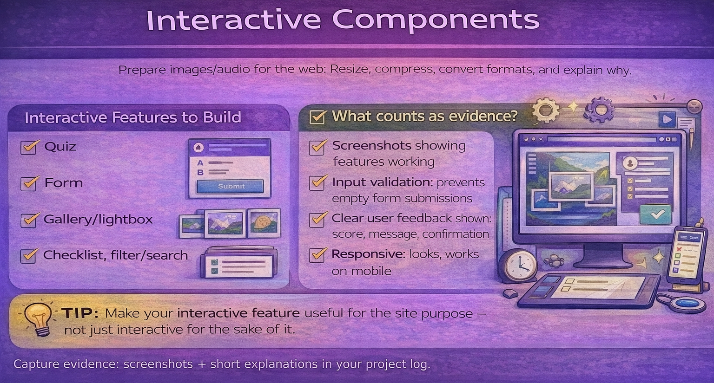

Task 2A(iii) Interactive components
Build navigation and interactive components for your website.
Navigation
Interactivity
User feedback
Responsive
Pro tip:
Interactivity should support the purpose of the site — not just be there for the sake of it.
Building your website in Dreamweaver
This R097 guide explains what you need to create.
The Dreamweaver guide shows you how to actually build the website step-by-step.
Open the Dreamweaver Website Building Guide
Navigation components to build - Provide annotated screenshots of the below items.
- A consistent menu/nav on every page.
- Buttons/links that make sense to your audience (simple labels).
- Clear page headings and 'where am I?' cues.
- Mobile-friendly navigation (dropdown, burger menu, or stacked buttons).
Interactive components to build
- At least one meaningful interactive feature (quiz, form, checklist, filter).
- Clear feedback for the user (success message, score, confirmation).
- Input validation (prevent blank submissions where appropriate).
- Test evidence: screenshots of features working.